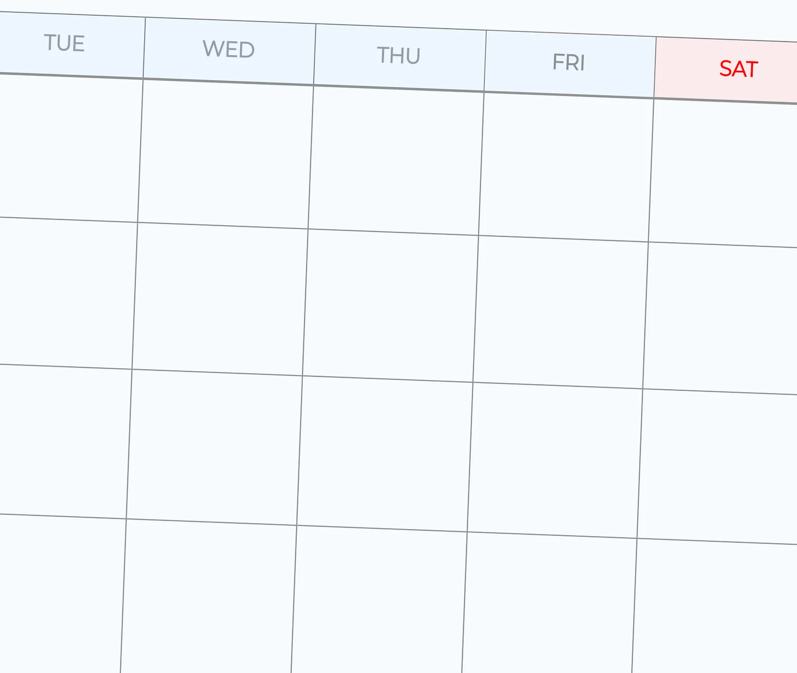
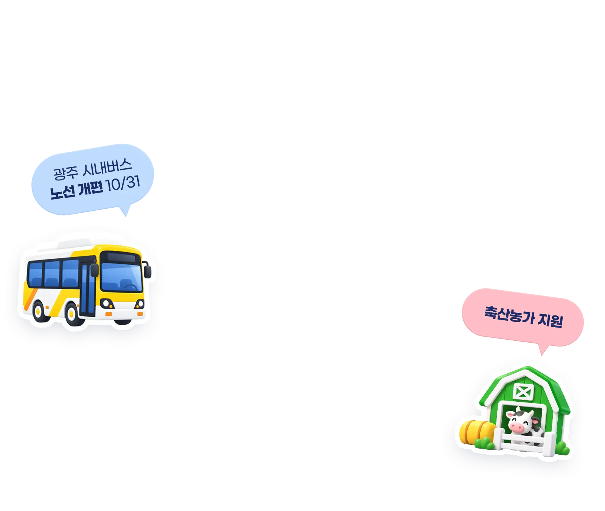
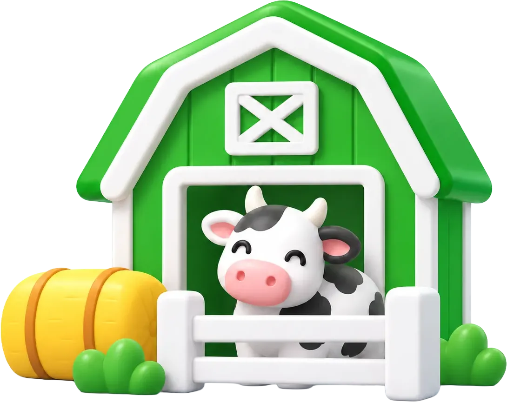

전남광주 이번 주 소식 모음
더 편리하고 더 빠르게!광주 시내버스 노선 개편
달라진 교통 환경에 맞춰 광주 지역 시내버스가 10월 31일부터 노선을 개편해 운행합니다. 노선은 늘리고 배차 간격은 줄였어요. 달라진 노선 정보는 아래 버튼을 눌러 확인하세요!
노선 103개 → 115개하루 운행 횟수 8,394회 → 8,929회
- 시행일
- 부터
- 주요 내용
-
- 노선: 103개 → 115개
- 하루 운행 횟수: 8,394회 → 8,929회
- 간선 노선 직선화, 혼잡·중복·장거리 노선 조정

축사 신축·개보수 융자 지원28일까지 신청하세요
축산농가의 생산성을 높이고 가축 사육 환경을 개선하기 위해 2027 축사시설현대화사업을 실시합니다. 신축·개보수가 필요한 전남광주의 축산농가는 주목해 주세요!
사업비 80% 저리 융자연 2% · 5년 거치 10년 상환
- 신청기한
- 까지
- 지원내용
- 축사 신축·개보수와 사육·방역시설 개선 등에 필요한사업비의 80%를 융자로 지원
- 금리
- 연 2%, 5년 거치 10년 상환※ 나머지 20%는 농가가 부담
- 지원대상
- 축산업 허가를 받거나 등록한 농가와 농업법인※ 신규: 해당 축종의 농장 실무경력이 3년 이상,축산 관련 고등학교·대학 관련 학과 졸업생
- 지원분야
-
- 신축·이전·개보수
- 급이·급수·전기·착유·환기시설
- 방역·방제시설, 분뇨처리시설
- 경관개선시설 설치 등
- 신청방법
- 해당 시군 읍면동 축산 담당부서 제출
널리 알리고 싶은
자원봉사활동 우수사례가 있다면!
자원봉사활동의 우수사례를 발굴·공유하고 자원봉사의 가치 확산 및 참여 문화 조성에 기여하는 ‘2026 자원봉사활동 우수 체험사례 공모전’에 도전하세요!
10명 시상최우수상 2 · 우수상 2 · 장려상 6
- 공모기간
- ~
- 대상
- 전남광주통합특별시민※ 특별시 내 소재 학교에 재학 또는 직장에 재직하면서특별시 내 자원봉사활동에 참가한 자도 포함
- 공모부문
- 일반부(대학생 포함), 학생부(중·고생)
- 공모분야
- 사회복지, 문화체육, 환경미화, 교통질서, 재난재해 지원·복구 등모든 영역의 자원봉사활동 체험사례※ 최근 2년(’24. 10.~’26. 9.)의 자원봉사 실적이 확인되는 체험수기에 한함
- 시상
- 10명(최우수상 2, 우수상 2, 장려상 6)
- 실적인증
-
- 1365자원봉사포털 (www.1365.go.kr)
- 사회복지자원봉사 인증관리 (www.vms.or.kr)